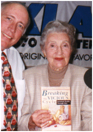

|
The Specific Carbohydrate Diet is developed by the Canadian biochemist Elaine Gottschall who has published the book "Breaking the Vicious Cycle" - which is the book about the Specific Carbohydrate Diet. Elaine Gottschall has spent four years at the University of Western Ontario researching the effects of various sugars on the digestive tract at cellular level, and one year researching the changes that occur in the bowel wall in inflammatory disease. The results of her work are published in the journal Acta Anatomica 123:178(1985). And the details of the Specific Carbohydrate Diet can be found in her book. The
basic principle of the Specific Carbohydrate Diet is: never eat
something that your intestines cannot digest. There are specific
carbohydrates which are trouble makers in the digestive system...
Date: Tue, 29 Jul 1997 12:30:39 PST From: ACB <benkea@MAILHOST.PAC.DFO.CA> Subject: Give it a try newcomers I have some personal advice to any newcomers to the diet, especially those who are quite sick at the time they are starting the diet. Start slowly, gradually, and carefully. You can't just jump into it, eating all the allowables in the beginning. You should start out with foods that are easier to digest and when the diarreah goes away you can introduce more foods gradually like raw fruits and vegies and nut breads. But in the beginning, be sure to peel, remove seeds, and cook all fruits and vegies well, and hold off on the nut related recipes. If you have any questions, ask us on the list and we can walk you through it. The book does explain this, but sort of in a round about way, and some people who just skim through the book and then start the diet tend to miss this crucial introductory phase. It upsets me because then they tend to get worse and blame the diet, when in reality, if they had followed it more carefully it may have worked. It's not complicated, really. Give it a try. Anna Date: Sat, 20 Mar 1999 09:06:20 -0400 From: Rachel Turet To: SCD-list@longisland.com Subject: we've all been there Dear Very Worried Mother, I remember when I was first diagnosed, thinking "what the hell is UC?" Never heard of it, didn't know anyone who had it and was sure I'd been struck by some rare, unheard of deadly disease. The most amazing thing about your letter and those you'll see on this site, is that it seems that at one stage or another, we've all been there. Same road, same shock, same feelings of helplessness and isolation. We've all had variations of the same doctors, some well-meaning and ignorant of this disease, others arogant and ignorant (worst combo) of this disease. As far as I know, nothing (with the exception of removal of the colon) has had the same success rate as this diet. It works to varying degrees in different people and for an unfortunate few doesn't seem to work, but there's tons of testimony (see www.SCDiet.org/testimonials ) that proves that there are scores of people like myself (4 years of remission on 4/1/99) who've had their lives turned around by the diet. Good luck and hang in there. Rachel ...Also, read some personal explanations
on the diet, answers to frequently asked questions from newcomers
on the SCD mailing list. How and Where To Get The Book If you're having trouble finding the book, try the
online book store at www.amazon.com.
They are great to deal with and have more books available than any
conventional book store. When searching for "Gottschall, Elaine"
or "Breaking The Vicious Cycle", you'll find both of her
books - the old and the new version. Amazon also includes many customer
testimonials and reviews of the book.
Please note, though, that it is a buck cheaper to buy it from John Chalmer (www.fwi.com/cmg/) than from Amazon. SCD
In Australia Date: Mon,
9 Nov 1998 21:11:20 EST Garry I purchased the book from Amazon.com and it took about a month to arrive in Darwin. The cost of the book with postage and handling was $29.00 American working out to $50.00 Australian. Yes its a bit pricey but its worth every cent. Goodluck Dani (UC) If
you live in Europe, you might like to know that the book
is also available at 13.95 pounds, including P&P - at:
Society for the Promotion of Nutritional Therapy, SPNT P.O. Box 47 Heathfield East Sussex TN21 8ZX England Tel (+44) 1-435867007 Fax (+44) 1-435868033 E-mail: 100045.255@compuserve.com
William R Gills in England also distributes the book. Contact:
William R Gills 31 Oakdale Glen Harrogate, North Yorkshire HG1 2JY England Tel: (+44) 1-423 568313 & (+44) 1-860 226463 Fax (+44) 1-423 531292. Check for the price there... If
you live in Denmark, you might like to know that Arnold
Busk Boghandel in Købmagergade 49 in Copenhagen can get
you the English version of the book in app. one months time. The
Danish edition can be purchased or
ordered in any book store in Denmark.
Date:
Tue, 20 Oct 1998 10:03:11 -0600
From: "Brad Lait" <laitb@cadvision.com> To: "SCD List" <SCD-list@longisland.com> Subject: canadian book ordering site For you Canadians that want to order Elaine Gottschall's book via the internet there's a site at http://www.bookshelf.ca |
|||||||||